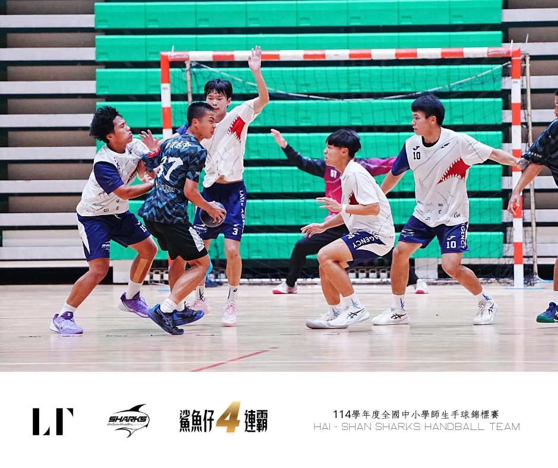
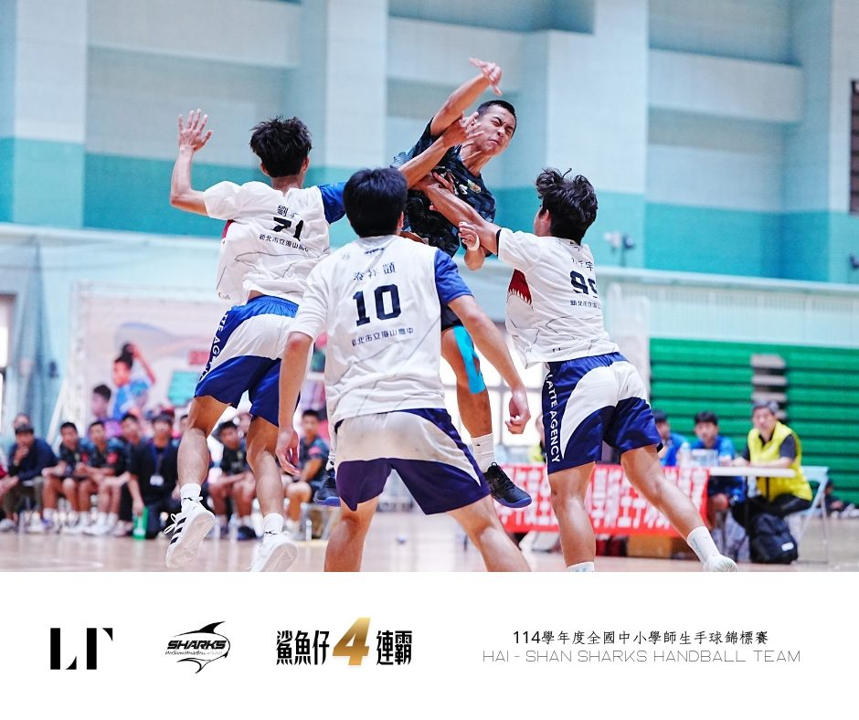

01我的故事
新北海山鯊魚
#海山高中男子手球隊 ＃品學技勇並重
#科技訓練＃國手教練＃全國手教練團
#新北鐵盾 #矮個教練 ＃二代系統訓練
#新北市立海山高級中學 ＃手球鯊魚仔


推薦理由
本校手球隊創立逾五十載，為國內男子手球傳統勁旅，多年來培育無數手球國手與菁英。球隊戰績彪炳，近年於各項全國賽事皆穩居四強之列
新北海山鯊魚
#海山高中男子手球隊 ＃品學技勇並重
#科技訓練＃國手教練＃全國手教練團
#新北鐵盾 #矮個教練 ＃二代系統訓練
#新北市立海山高級中學 ＃手球鯊魚仔


本校手球隊創立逾五十載，為國內男子手球傳統勁旅，多年來培育無數手球國手與菁英。球隊戰績彪炳，近年於各項全國賽事皆穩居四強之列
歷屆成績 · 更新於 2026/04/29
三連霸手球冠軍隊推手！海山高中手球隊教練的一天
揚威國際 海山高中手球隊世界冠軍
跑跳擲，缺一不可【中小學師生手球錦標賽】｜賽事聊一聊 #海山高中
訓練與參賽計畫
全國中小學師生盃是手球界最具代表性的賽事。自球隊成立60年以來，我們僅曾奪下過一次師生盃全國冠軍。然而，去年我們再創歷史，成功奪下隊史第五座冠軍，並完成夢寐以求的四連霸，這也是手球生涯中最具分量的成就之一。
在教練帶領與球員們持續努力不懈堅持之下，今年竟破天荒地再次奪下師生盃冠軍。
刷新紀錄，寫下海山史上最傳奇的一頁
四！ 連！ 霸！
今年冠軍榮獲出國參賽機會
由中華民國手球協會推薦參賽
『2026 法國巴黎國際手球錦標賽』
階段目標：
1. 第一階段：參加新北市手球錦標賽爭取前二名。
2. 第二階段：參加全國性質手球賽會爭取前三名。
(1) 選手的身體形態、生理狀態的改變。
(2) 選手的心智能力提升。
(3) 選手的體能提升。
(4) 選手的基本技術熟練。
(5) 加強小組配合戰術。
3. 第三階段：參加教育部指定盃賽爭取前第一名
(1) 心智、體能、技(戰)術能力全面提升。
我想達到…
準備期：40%~60%(體能) / 60%~40%(技、戰術)
比賽期：20%~35%(體能) / 80%~65%(技、戰術)
過渡期：65%~80%(體能) / 35%~20%(技、戰術)
全面性體能訓練：全身性運動素質之加強。
專項性體能訓練：肌力、速度、爆發力、耐力與協調等專項能力之增強。
基本攻擊技術：傳接球、各種射門、基本步法、個人突進快攻之攻擊動作等。
基本防守技術：普通球員之各種防守步法、封阻、壓迫、抄截及守門員之防守動作等。
攻擊戰術：小組攻擊、單中樞攻擊、雙中樞攻擊、團隊慢攻訓練、團隊快攻訓練、特殊情況之攻擊。
防守戰術：小組聯防、區域防守、盯人防守、特殊狀況之防守。
(1)培養自我控制能力，提升穩定性及自信心。
(2)培養積極進取之訓練態度，提升訓練績效。
(3)培養忍受艱苦之奮戰精神，提高堅強意志力。
(4)運用專注訓練與意象訓練，提高練習品質。
需求項目與數量（依官方頁面）
| 選手營養費 | NT$ 60,000 |
| 運動科學支援費 | NT$ 60,000 |
| 訓練器材裝備費 | NT$ 36,000 |
| 參賽旅運費 | NT$ 1,100,000 |
| 課業輔導費 | NT$ 25,000 |
| 經費需求合計 | NT$ 1,281,000 |
標示「不公開」者為官方頁面未揭露之欄位。